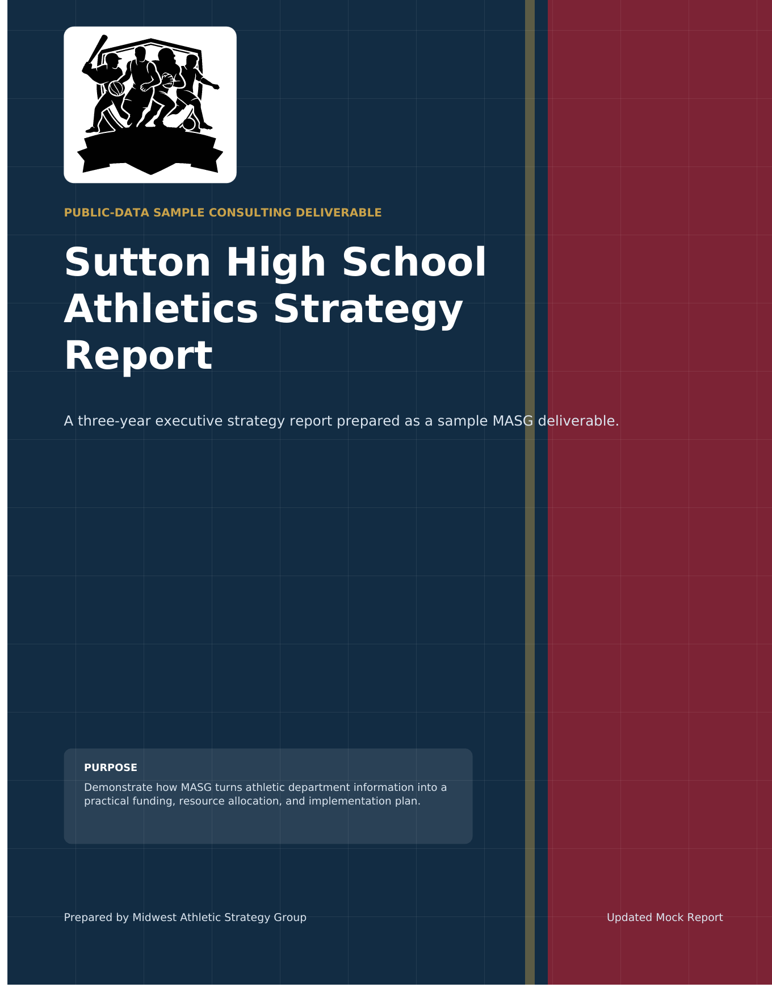

Executive summary
A concise view of the recommendation and why it matters.
Sample report
A public-data mock report showing how MASG turns athletic program information into a clear planning document for the department as a whole.
Not an official school report. Built to show the type of strategy output MASG can produce.

Public-data mock deliverable
The sample report demonstrates report structure, strategy logic, funding ideas, resource allocation, KPIs, internal data needs, and the kind of fundraising and support-building guidance MASG can build into a school plan.
This is a public-data sample report. It is not an official school report and is not commissioned by, affiliated with, or endorsed by Sutton Public Schools.
What it includes
The sample report is organized around the questions a school leader would actually need answered.
A concise view of the recommendation and why it matters.
Strategic role, cost pressure, visibility, and participation value by sport.
Sponsorship tiers, events, concessions, livestream, annual giving, camps, and guidance for broader community or local-government support.
Metrics for cost, participation, event value, replacement risk, and revenue quality.
Why this matters
A useful athletics report should separate confirmed facts from modeled assumptions, show what internal data is still needed, and turn recommendations into a roadmap leaders can explain, update, and build support around.